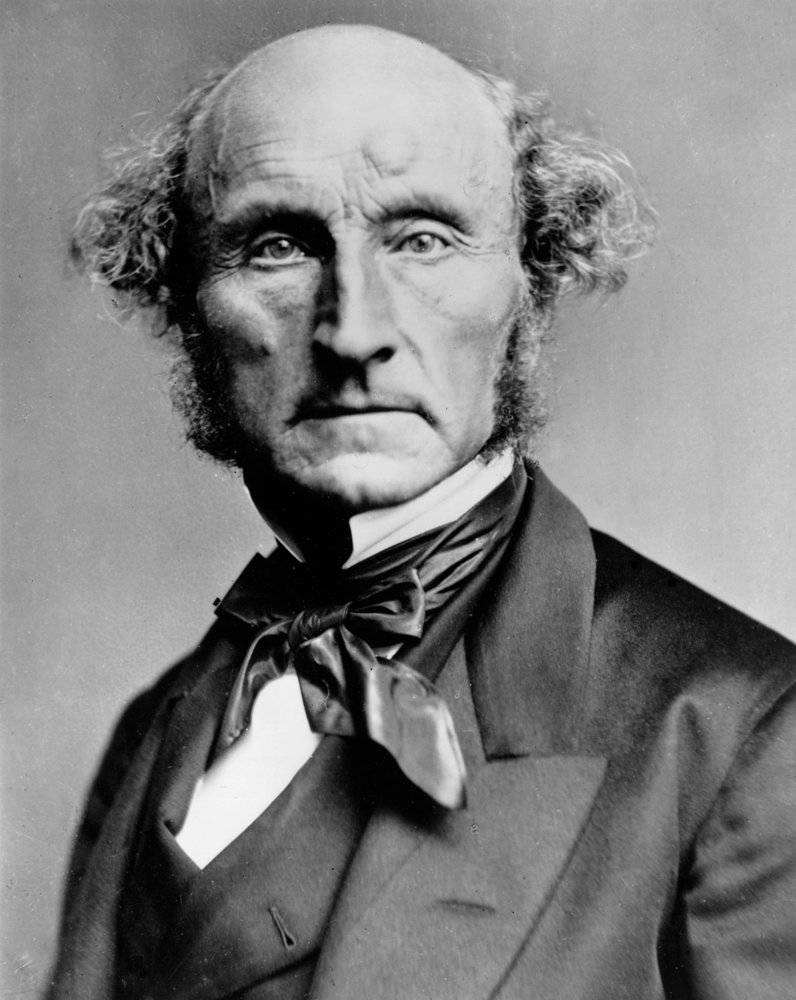

Mill would protect an accusation against a grain dealer in a newspaper and allow punishment when the same accusation is used to stir up a mob outside his house. The words can be identical. What they are doing has changed.
On Liberty, published in 1859, asks when society may force someone to do what they would otherwise refuse. Mill's answer is to prevent harm to others. An adult's health or moral improvement is not enough on its own. The restriction applies to the coercion of public opinion as well as the force of law.
Mill defends freedom because people learn through disagreement and develop through making choices. He also permits some interference and excludes whole societies from his principle.

The passages use the Walter Scott edition at Project Gutenberg, preserving its British spelling. [...] marks an omission. The explanations are my reading.
Stop 1 / The harm principle
Over yourself, you are sovereign
Mill / Chapter 1, pp. 17 to 18
"That the only purpose for which power can be rightfully exercised over any member of a civilised community, against his will, is to prevent harm to others. His own good, either physical or moral, is not a sufficient warrant. [...] Over himself, over his own body and mind, the individual is sovereign."
Mill allows you to warn someone about a dangerous choice and urge them to reconsider. He generally rejects paternalism, forcing a person for their own benefit, when an adult is capable of deciding.
The protected sphere includes conduct involving other adults with their free, informed consent. Disapproval of a neighbor's beliefs is different from a violated obligation. Mill argues that society should bear some indirect costs of freedom. Chapter 1, pp. 21 to 22.
His basis is utility, human well-being, grounded in "the permanent interests of man as a progressive being." He gives up an argument from an abstract right independent of utility. The value of developing a person's judgment belongs inside his account of well-being, alongside their knowledge of what suits them. Chapter 1, pp. 19 to 20.
Harm to others opens a question about interference; it doesn't settle it. Control can cause greater evils than the conduct it prevents. Mill requires an argument that intervention would help. He also allows losses through fair competition: losing an appointment to a rival doesn't give you a right to stop them competing. Chapter 5, pp. 178 to 179.
Stop 2 / The tyranny of the majority
A majority can govern other people's lives
Mill / Chapter 1, p. 8
"Society can and does execute its own mandates: and if it issues wrong mandates instead of right, or any mandates at all in things with which it ought not to meddle, it practises a social tyranny more formidable than many kinds of political oppression, since, though not usually upheld by such extreme penalties, it leaves fewer means of escape, penetrating much more deeply into the details of life, and enslaving the soul itself."
In a democracy, "the people" who wield power can oppress other people. Mill means the largest faction, or an active faction that presents itself as the majority. Elected governments still need limits.
A community can also make a dissenter afraid to express a belief that no law forbids. Mill describes people concealing religious doubts to protect their livelihood, and others narrowing their inquiries to subjects that are safe to discuss. Chapter 2, pp. 58 to 62.
Mill permits unfavorable judgments and avoiding someone's company. He distinguishes these responses from deliberately imposing suffering to punish a choice that belongs to the person making it. Other people's freedom of association complicates his distinction between social judgment and coercion. Chapter 4, pp. 145 to 147.
Stop 3 / Freedom of discussion
The silenced opinion may be true
Mill / Chapter 2, p. 30
"If all mankind minus one, were of one opinion, and only one person were of the contrary opinion, mankind would be no more justified in silencing that one person, than he, if he had the power, would be justified in silencing mankind."
Silencing an opinion deprives everyone else of a possible correction. Mill uses the condemnation of Socrates to show how people can sincerely defend morality while persecuting someone later generations admire.
Governments must act despite uncertainty. Mill accepts this objection, then distinguishes acting on a belief after allowing challenges from preventing challenges that might expose its error. Confidence can be warranted; denying other people a hearing prevents them from examining its warrant.
A censor might answer that an opinion is socially destructive even if true. Mill replies that its usefulness is itself disputable. Calling an opinion "dangerous" still requires authorities to decide which arguments everyone may hear, while preventing scrutiny of that decision. Chapter 2, pp. 35 to 44.
Stop 4 / Understanding a true belief
Knowing the answer without knowing why
Mill / Chapter 2, pp. 64 to 65 and p. 67
"[...] however true it may be, if it is not fully, frequently, and fearlessly discussed, it will be held as a dead dogma, not a living truth."
"He who knows only his own side of the case, knows little of that."
Suppose the accepted belief is true. A person can repeat the conclusion without understanding its reasons or knowing how to answer an objection. Mill wants students to hear the opposing case from someone who believes it and can defend it well.
Mill makes an exception for mathematics, where he thinks learning a demonstration can be enough. His concern is with subjects such as politics and morality, where judgment requires weighing conflicting reasons. If no opponents remain, he recommends constructing the strongest objections ourselves.
A mistaken opinion may also contain a truth the accepted view overlooks. And a true belief can lose its effect on conduct when people inherit words without feeling their meaning. Mill's four grounds for free discussion are possible truth, partial truth, understanding reasons, and retaining a conviction's practical force.
Mill says sectarian hostility can grow worse through discussion. He hopes less committed listeners will benefit from hearing competing arguments. Permission to publish cannot ensure that those arguments will be heard and considered, and his defense makes no promise of inevitable agreement. Chapter 2, pp. 96 to 99.
Stop 5 / Individuality
Choosing a life develops the person choosing
Mill / Chapter 3, p. 105 and pp. 110 to 111
"As it is useful that while mankind are imperfect there should be different opinions, so is it that there should be different experiments of living; that free scope should be given to varieties of character, short of injury to others; and that the worth of different modes of life should be proved practically, when any one thinks fit to try them."
"Human nature is not a machine to be built after a model, and set to do exactly the work prescribed for it, but a tree, which requires to grow and develop itself on all sides, according to the tendency of the inward forces which make it a living thing."
A custom may have worked for other people without fitting your circumstances or desires. Different "experiments of living" let people test alternatives and others learn from them.
Choice also has value before we know its result. Someone who weighs a decision practices observation and judgment; carrying it out requires resolve and self-control. Even a well-chosen custom cannot develop those faculties if a person follows it only because everyone else does. This is the point of the tree passage: a good outcome imposed from outside can leave the person less able to direct their own life.
Mill values exceptional people who discover new possibilities. He also defends ordinary differences in taste and character. People shouldn't need to prove an unconventional life benefits the public before being allowed to live it. His condition is "short of injury to others."
Stop 6 / Applying the principle
Which effects on other people justify interference?
Mill / Chapter 3, p. 104
"An opinion that corn-dealers are starvers of the poor, or that private property is robbery, ought to be unmolested when simply circulated through the press, but may justly incur punishment when delivered orally to an excited mob assembled before the house of a corn-dealer, or when handed about among the same mob in the form of a placard."
"Corn" means grain. Mill protects criticism of the dealer while allowing punishment for incitement outside his house. His inclusion of a written placard makes the distinction clear: expression can become an instigation to harm in either medium.
A broader objection is that private conduct rarely stays private. Spending your money or damaging your health can affect your family, your employer, and anyone who depends on you. James Fitzjames Stephen presses this objection in Liberty, Equality, Fraternity (1873): the effects on self and others cannot be separated into two independent kinds of act.
Mill distinguishes neglecting a specific obligation from causing general social inconvenience. Spending so freely that you cannot pay your debts or support your family can justify punishment for breaching those duties. Society's wish that you were more useful to it doesn't create an equivalent obligation. Mill includes definite risks of damage as well as damage already done. Chapter 4, pp. 153 to 155.
Mill's difficult cases
You may stop someone crossing an unsafe bridge if there's no time to warn them. Mill assumes they don't want to fall. Once a competent adult knows the risk, deciding whether to take it generally belongs to them. Intervention can make a choice informed without overruling it. Passage.
Poisons have legitimate uses. Mill accepts labels and records of sales to warn buyers and make criminal misuse harder. He rejects punishment for drunkenness alone, while allowing punishment for a soldier or policeman drunk on duty. A duty to other people changes the justification. Poisons, pp. 183 to 184; drunkenness, p. 154.
Mill permits compulsory testimony, a fair contribution to common defense, and duties to rescue in sufficiently clear cases. Requiring someone to prevent harm they didn't cause needs greater caution than holding them responsible for harmful actions. Passage.
Mill refuses to enforce a voluntary contract of enslavement. Giving away all future freedom defeats the reason for protecting choice. This exception preserves a person's future capacity to choose, even against their present decision. Passage.
Offense presents another difficulty. Mill denies that a person's dislike of another's religion or private habits gives them an equal claim to control those habits. Yet in chapter 5 he permits prohibiting public "offences against decency," including acts permissible in private. He treats their public performance as an offense against others without fully explaining how it crosses his threshold. Page 186.
Mill leaves judgments about risk, consent, and enforceable obligations to be made. Calling something a harm cannot settle whether coercion would be justified.
Stop 7 / Later arguments
Discussion, incitement, and the limits of law
Mill's epigraph, adapted from Humboldt / Coulthard, 1854
"The grand, leading principle, towards which every argument unfolded in these pages directly converges, is the absolute and essential importance of human development in its richest diversity."
Mill takes his epigraph from Wilhelm von Humboldt's The Sphere and Duties of Government, translated by Joseph Coulthard in 1854. Mill's version omits a word and turns a longer sentence into a standalone statement. Its aim is people developing in different ways. Later arguments about speech and private conduct draw related distinctions, within their own legal settings. Humboldt, chapter 6, p. 65.
Three comparisons
Justice Oliver Wendell Holmes, dissenting, defended "free trade in ideas" and the "competition of the market" as a test of truth. His market analogy resembles Mill's case for discussion. The Court upheld the convictions; Holmes's argument was the losing one. Opinion.
The Court distinguished advocacy from incitement directed toward imminent lawless action and likely to produce it. The corn-dealer invites comparison, though Mill doesn't formulate the Court's precise requirements of direction, imminence, and likelihood. Opinion.
The committee recommended that consensual sexual acts between adult men in private cease to be criminal. It argued that some private morality was "not the law's business." The ensuing debate between H. L. A. Hart and Patrick Devlin concerned whether preserving a society's shared morality could justify criminal law. That dispute tests Mill's distinction between disapproval and an injury others may prevent. Report in the Parliamentary Archives; the Hart-Devlin debate.
Text and further reading
The excerpts come from On Liberty, Project Gutenberg eBook 34901. Page numbers refer to its Walter Scott edition, with W. L. Courtney's introduction. Mill's original English text is public domain.
- David O. Brink, "Mill's Moral and Political Philosophy", sections 3.6 to 3.11, examines harm, paternalism, and the tension between utility and protected liberties. Some of Mill's exceptions fit his stated rule poorly; their interpretation remains contested.
- James Fitzjames Stephen, Liberty, Equality, Fraternity, especially "Liberty in Relation to Morals," argues for a wider role for moral coercion. Compare Mill's chapter 4 response.
- Uday Singh Mehta, Liberalism and Empire (1999), examines the imperial exclusions in nineteenth-century British liberal thought.
Mill dedicated the book to Harriet Taylor Mill, who died in 1858. He called her "in part the author" of the best in his writings and said this book belonged as much to her as to him. His dedication acknowledges her contribution. Its exact extent remains a subject of scholarly disagreement.